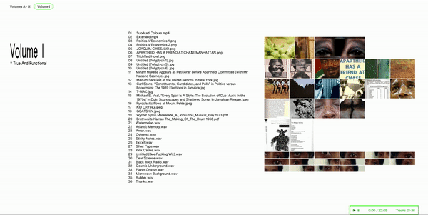
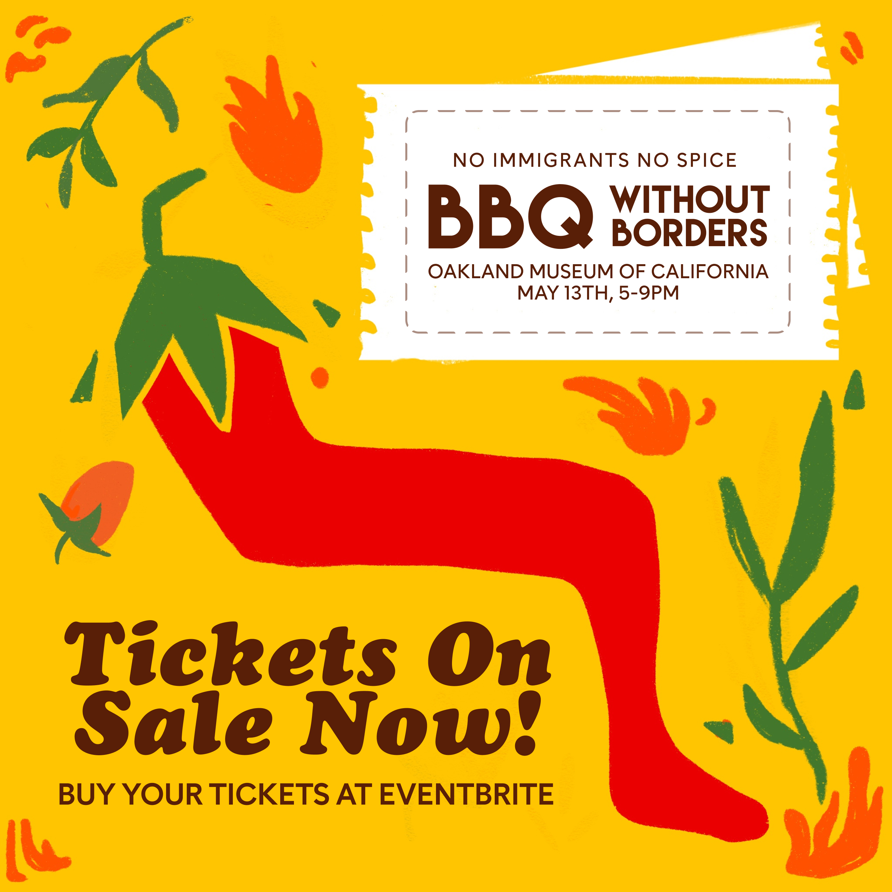
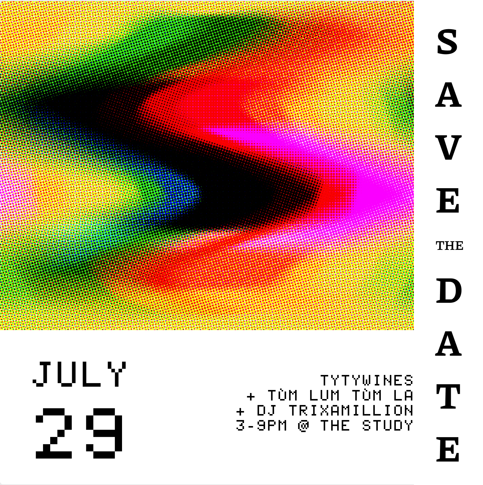

[web dev] 
True And Functional is an open-ended collection of artworks, concepts, and ideas. Works by Timothy Yanick Hunter. True and Functional: Volume I, a project by Timothy Yanick Hunter, is supported by Oakville Galleries and the Toronto Biennial of Art on the occasion of their respective exhibitions, Timothy Yanick Hunter: Collapse and Incompletion at Oakville Galleries and Ngozi: We Might Listen For the Shimmerings, curated by Chiedza Pasipanodya as part of the Toronto Biennial of Art 2022. Design by Rupali Morzaria.
[design, illustration]
book cover design for Flowers for Dana: the 1949 Murder of Dana Marie Weaver in the "Star City" Roanoke, Virginia
[design, illustration] 
print & digital design for event BBQ Without Borders 2023. Work included illustration and design for IG posts, print flyers, digital banners, print & digital brochure, exhibit panel type design, day-of signage.
[web design, web dev]
design & hand-coding web pages for archives of resistance, an online project curated by soJin Chun and designed by rupali morzariato bring together contemporary artists that work with alternative archives as raw material for their work.
[design, illustration, marketing, web design] 
flyers, web design, and other branding material for food pop-up
[web design, web dev]
web design & development with different website platforms and creative studios
[design]

book cover design for biography of Japanese artist Yasushi Tanaka and his American wife Louise G. Cann.
[illustration]

paintings done with mixed media for exhibition of interviews. #ChineseFoodiesofIG is an ongoing interview series by celestialpeach that celebrates food lovers from the global Chinese diaspora, where they have interviewed 100 people about what home tastes like.
[mixed media]

staging and prop design for joy on joice booth
paper mache fruit stand